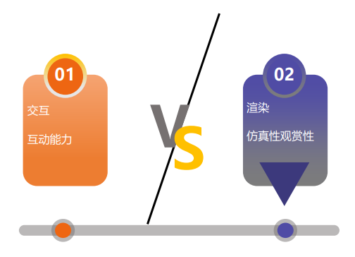
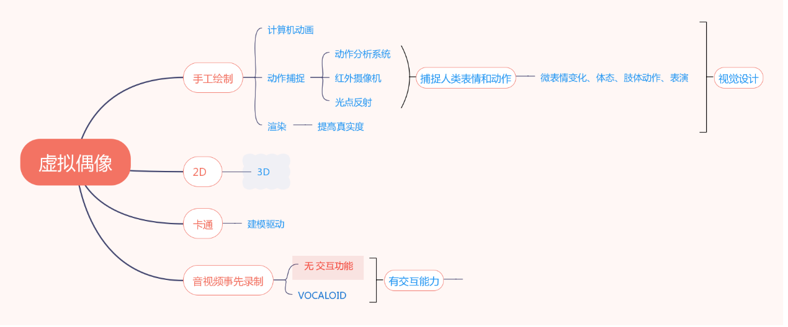

-04-
相爱相杀，相辅相成
法律
虚拟偶像的弱限制性也在法律维权道路上给自己设置了限制。从人格权、知识产权以及财产权角度来看，虚拟偶像依然缺乏一定的独立性，利益相关方的权利义务目前尚难界定。“在國内，目前对个人专属虚拟形象的财产权及商品化权方面属性基本没有争议。对于人格权，多数学者仍持否定的态度。虚拟形象应当与姓名和肖像具有同样的商品化权属性，但是否定其人格权属性，因为虚拟形象不具有隐私权的属性。事实上由于在虚拟主播出现之前，虚拟形象很难与自然人的身份一样产生被大量公众认可的联系，因此没有法律确认与保护人格权的必要。”
IP
作为身份型数字虚拟人，很多虚拟偶像依托IP运营产生了多种呈现方式，进行了品牌建设，实现商业变现。一般来说，IP的头部效应明显，大IP引入可为虚拟偶像带来大量粉丝，形成流量基础。在中后期，虚拟偶像运营商也要依托技术和IP的衍生能力，在巩固IP粉丝与破圈这两个目标中寻求平衡。
元宇宙
随着元宇宙的不断建设，虚拟偶像作为其中重要的部分，将获得更高的价值和更多的机遇。人们依托自己的虚拟化身，可以从更高维度与虚拟偶像互动交流，这意味着虚拟偶像将拥有更管阔的市场。
社区
在虚拟偶像行业发展到相对稳定的营运状态前，开发者需要持续创建其衍生社区生态，防止粉丝情绪与言论的过度发酵。随着概念的下沉，虚拟偶像的形式将受到更小的局限，呈现出更加多变的形式与状态。虚拟偶像在元宇宙与全真互联网创建浪潮的推动下，尚有着难以预估的发展潜力。虚拟偶像所依托的技术的每一次变革，都将引发其一次更新换代，并在不同机遇中获得商业价值。
恐怖谷
虚拟偶像的表情、动作等细节的不到位，会使人感到古怪甚至是恐怖的僵硬，带来极不好的观感。这要求渲染和交互应当达到更好的平衡，实现实时交互，让虚拟偶像的实时行动力与仿真性实现高度的契合。

技术依托

在虚拟偶像发展的进程中，有无数技术为之诞生。其中，初音未来依托mmd技术，从一由几张官方人设图构成的拟人化形象转变成了能唱能跳的虚拟歌姬。以及后期，基于计算机图形图像技术的发展，捕捉技术利用摄像机等外部设备，来记录演员肢体和面部标记所发生的活动变化数据，并套用在3D人物建模，完成了肢体动作和面部表情变化甚至表演的转换。IphoneTrueDepth摄像头也能够相当准确地跟踪用户面部的运动，只需用手机即可对人脸进行动画处理，降低了虚拟形象创作的门槛。
从动态角度来说，动作捕捉、手势控制、表情控制和口型同步等技术为虚拟偶像提供了真实感，具体手段包含光学动捕、惯性动捕、手套捕捉和VIVE Tracker等技术。从发展角度看，虚拟偶像所需技术从激光大空间定位技术、动作捕捉技术、力反馈技术，到现在不断追求眼、耳、触觉、嗅觉和运动的反馈，呈现出精细化的趋向。人们依托AR（虚拟现实）、VR（增强现实）、MR（混合现实）、3D动画制作与建模技术、自然语言处理和生成技术（NLP和NLG）、AI驱动与人工手动操作等技术，改善了虚拟偶像的最终效果。